Design & Fabrication
Four-Bar Mechanism Motion Analysis
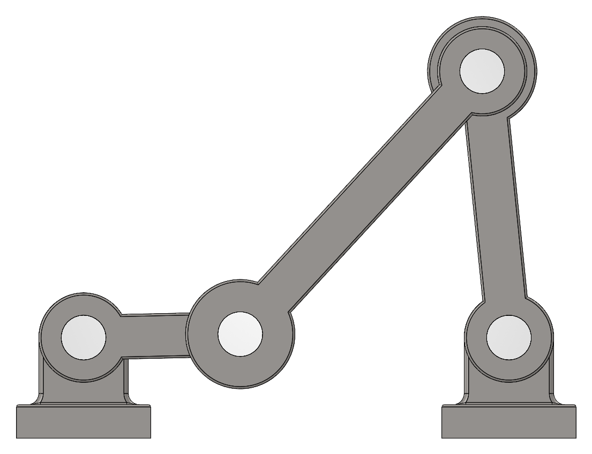
Project overview
Simulating A Crank-Rocker Before Building It.
I assembled a four-bar mechanism in SolidWorks, removed its redundant constraints so it had exactly one degree of freedom, and used SolidWorks Motion to find the torque, forces, and power a motor needs to drive it.
A crank, an extension (the coupler), and a rocker link two fixed bearings set 130 mm apart. A rotary motor turns the crank, and the extension and rocker follow. Once the links were made of plain carbon steel and gravity was switched on, the simulation shows how much the motor must push, and when it must hold back, to keep the crank at a constant speed.
This page follows the assignment: the model, removing redundancies, the midpoint velocity, and the determined values (a)–(e).
Key Work & Outcomes
- Reduced the mechanism from 9 redundant constraints to exactly 1 degree of freedom by choosing the right joint types.
- Found a maximum motor torque of 0.641 N·m, at a crank angle of 324°, at 20 rpm.
- Found maximum vertical bearing forces of 13.05 N (Bearing) and 9.91 N (NewBearing), which together average out to the links’ 17.4 N weight.
- Showed the motor needs about 1.12 kW of peak power to hold the crank at a constant 600 rpm.
The model
Four Links, Two Fixed Bearings
Bearing and a copy of it, NewBearing, are fixed 130 mm apart. The crank, extension, and rocker connect them in a closed loop.
| Part | Role | Mass (plain carbon steel) |
|---|---|---|
| Crank | Driven by the motor at Bearing; turns all the way around | 0.392 kg |
| Extension | The coupler linking the crank to the rocker | 0.754 kg |
| Rocker | Swings back and forth about NewBearing | 0.629 kg |
| Bearing and NewBearing | Fixed supports for the crank and rocker | 0.447 kg each |
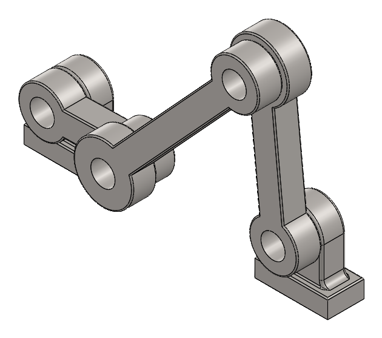
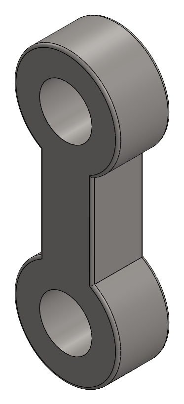
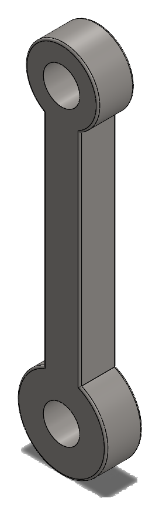
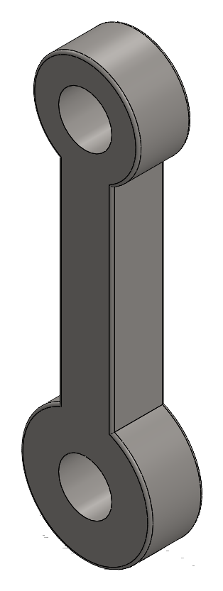
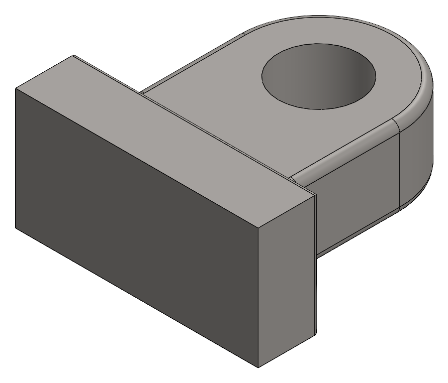
Removing redundancies
Getting To Exactly One Degree Of Freedom
With a hinge at every joint, the motion solver found 9 redundant constraints, so I changed two joints instead of letting the solver remove constraints on its own.
Three moving links in 3D have 18 degrees of freedom. Four hinges remove 5 each, 20 in total, so the loop is over-constrained on paper and only moves because the parts line up perfectly. Changing the joint between the extension and the rocker to a concentric mate (it may also slide along its axis) and the joint between the rocker and NewBearing to a point-to-point spherical joint leaves exactly one degree of freedom, driven by the crank motor:
| Joint | Type | Constraints removed |
|---|---|---|
| Bearing – Crank | Hinge (revolute) | 5 |
| Crank – Extension | Hinge (revolute) | 5 |
| Extension – Rocker | Concentric (cylindrical) | 4 |
| Rocker – NewBearing | Spherical (point coincident) | 3 |
| Total | 17 of 18, leaving 1 DOF |
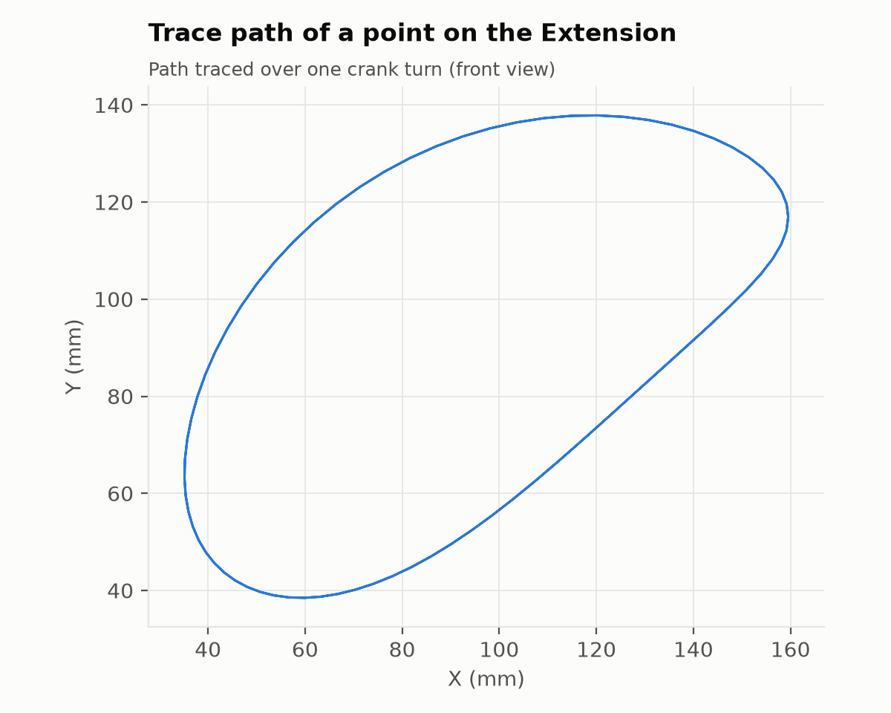
Assignment 1–2
Velocity Of The Extension Midpoint
With the crank at 20 rpm (one turn every 3 s), the midpoint of the extension reaches 0.100 m/s in X and ±0.147 m/s in Y.
I plotted the X and Y velocity of the midpoint over two crank turns and exported them to CSV. The motion repeats every turn: Y ranges from −0.146 to +0.147 m/s and X from −0.082 to +0.100 m/s.
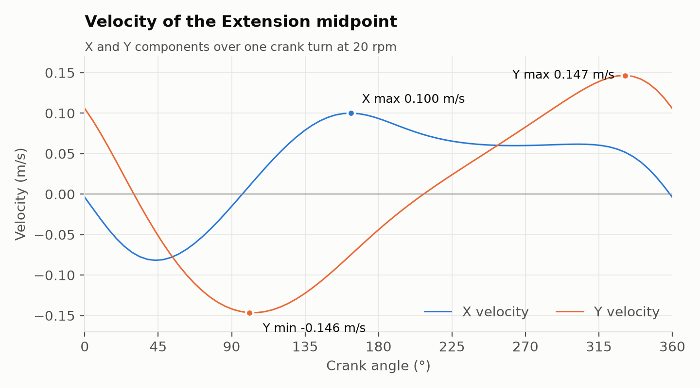
Assignment 3–4
Steel Links, Gravity, And The Determined Values
With every part changed to plain carbon steel and gravity added, I plotted the motor torque, the bearing reactions, and the motor power.
Crank angles are measured from the crank’s starting position (horizontal, between the two bearings) in the motor’s direction of rotation.
| Determine | Result |
|---|---|
| (a) Maximum motor torque | 0.641 N·m. The largest torque in the opposite direction is −0.720 N·m. |
| (b) Crank angle at maximum torque | 324° in every cycle (−0.720 N·m occurs at 156°) |
| (c) Maximum vertical force on the bearings | Bearing: 13.05 N at 276°. NewBearing: 9.91 N at 24°. |
| (d) Minimum motor power for a constant 600 rpm | About 1.12 kW (1,120 W peak, at 0°) |
| (e) Meaning of negative torque | The motor is braking the links rather than driving them (explained below) |
(a) and (b): Motor torque
At 20 rpm the motor torque peaks at 0.641 N·m when the crank is at 324°, near the end of each turn, while the motor lifts the extension and rocker. The torque is positive from 246° through 360° to 78°, and negative from 78° to 246°.
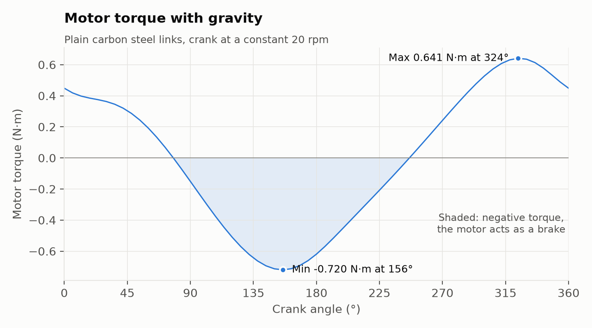
(c): Vertical force on the bearings
Bearing carries up to 13.05 N (at 276°) and NewBearing up to 9.91 N (at 24°). The two share the load as the links move: when one carries more, the other carries less. Averaged over a turn, they add up to 17.41 N, exactly the weight of the three moving steel links (1.775 kg), which confirms these are the vertical components.
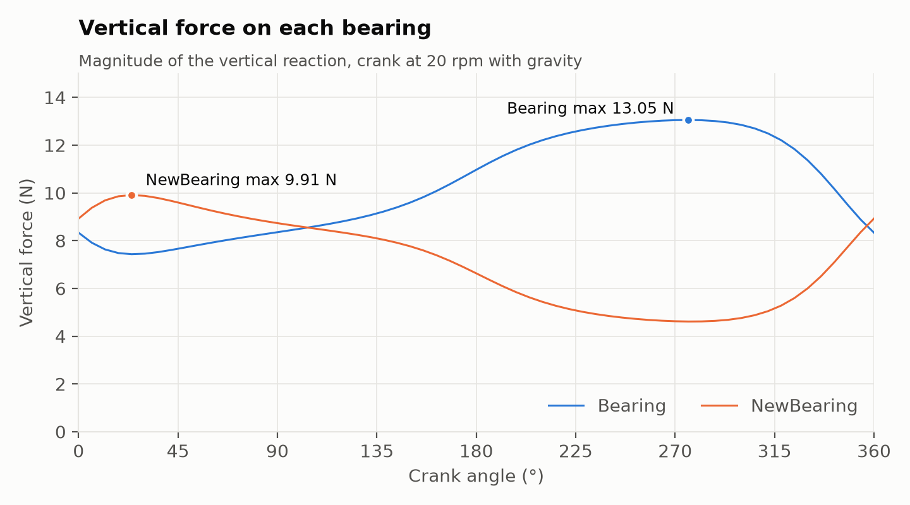
(d): Power at 600 rpm
At 600 rpm (one turn every 0.1 s) the links’ inertia dominates, and the power swings from +1,120 W to −615 W every turn. A motor holding the crank at a constant 600 rpm must deliver the peak, so it needs at least about 1.12 kW, equivalent to 17.8 N·m of torque at 62.8 rad/s. For comparison, at 20 rpm the peak power is only 1.34 W.
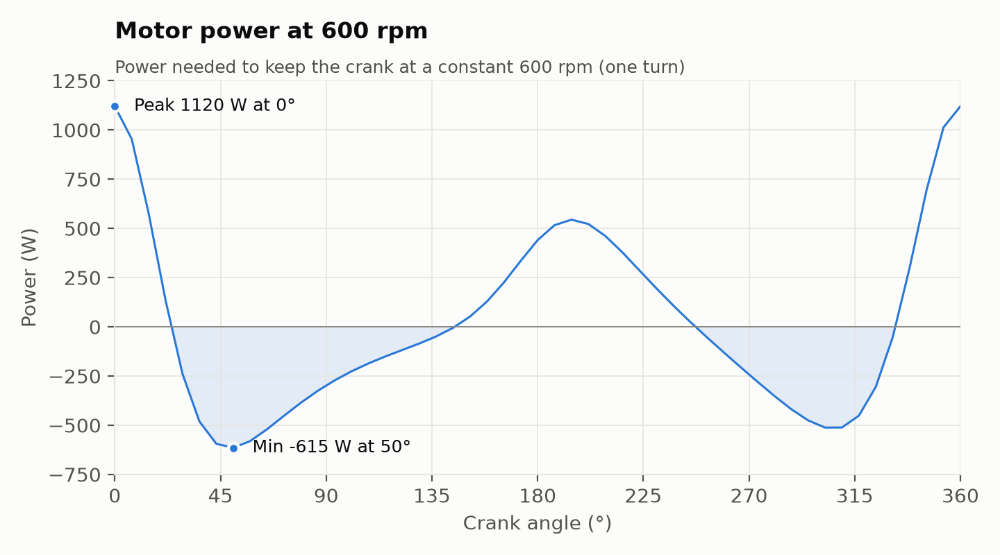
(e): What negative torque means
Positive torque means the motor is pushing the crank in its direction of rotation, doing work to lift and accelerate the links. Negative torque means the links are trying to run ahead of the motor: between 78° and 246° the extension and rocker are coming down, so gravity (and, at high speed, the links’ momentum) would speed the crank up. To keep the speed constant, the motor pushes back and acts as a brake, absorbing energy instead of supplying it, which is why the power is negative over the same range.
Because the simulation has no friction, the two balance out: over one turn the motor puts in 1.25 J lifting the links and takes the same 1.25 J back as they fall, so the net work per turn is zero.
Download the data: motor torque, Bearing force, NewBearing force, power at 600 rpm (CSV).
Continue exploring